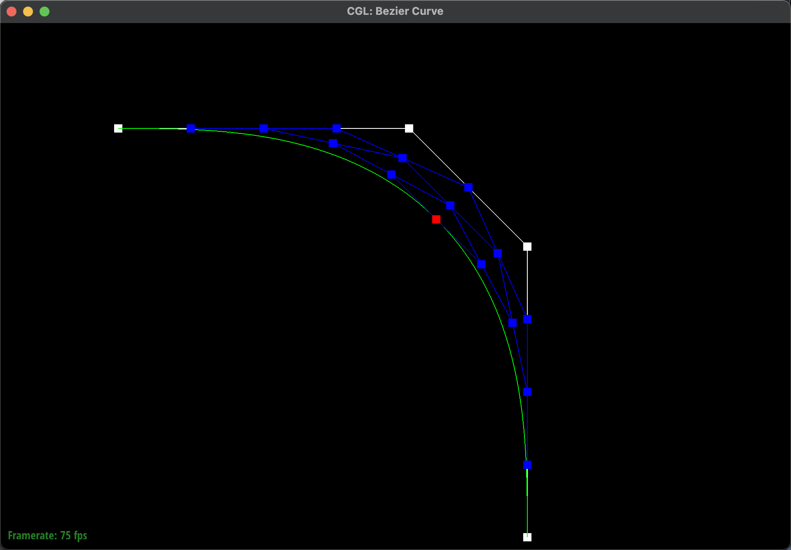
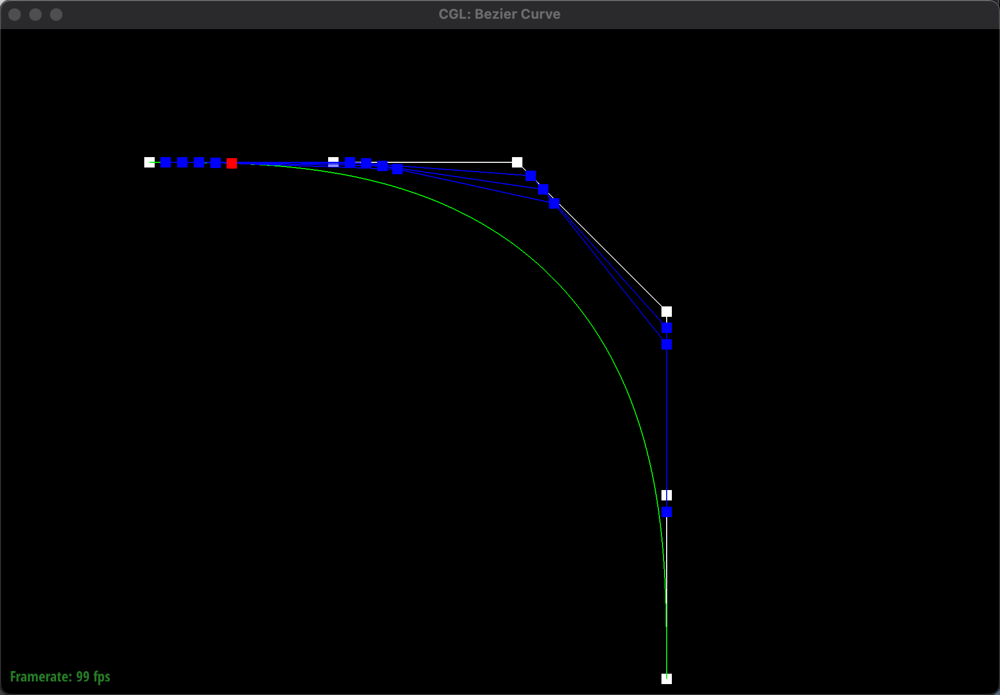
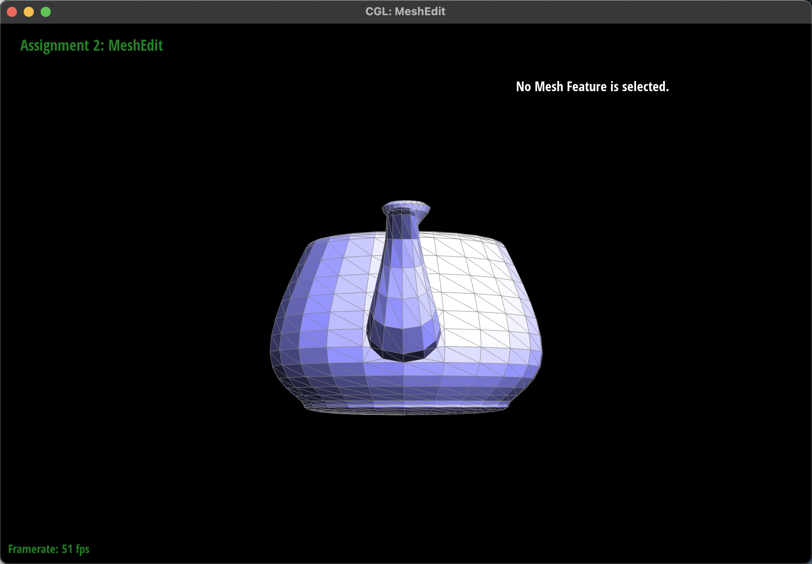
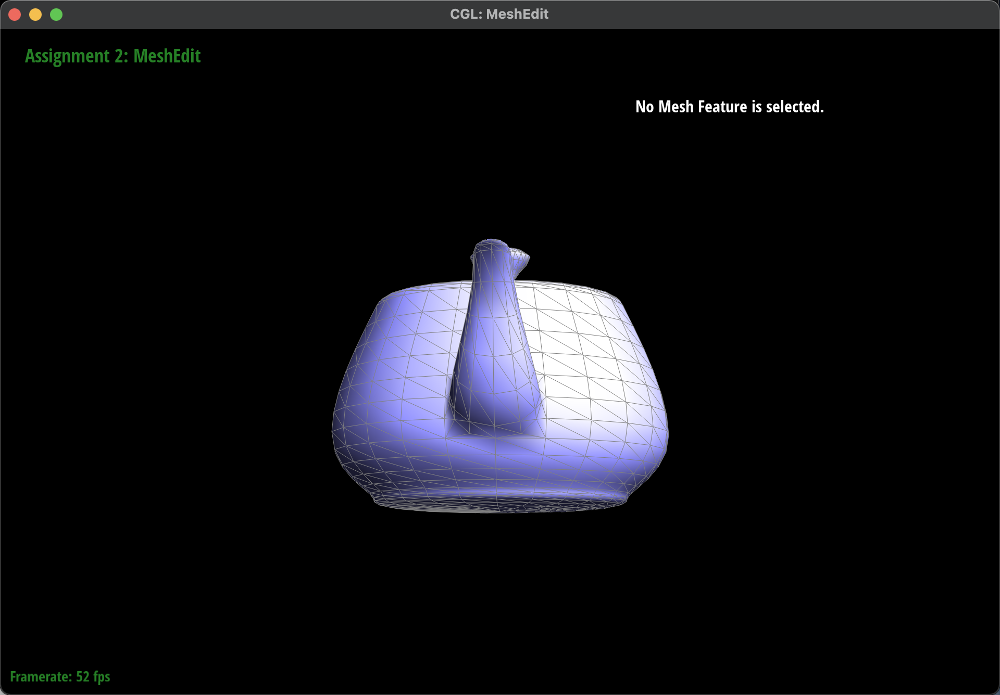
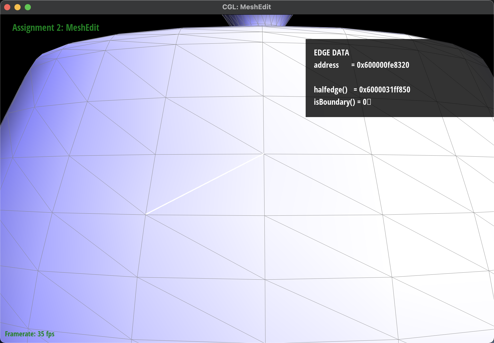
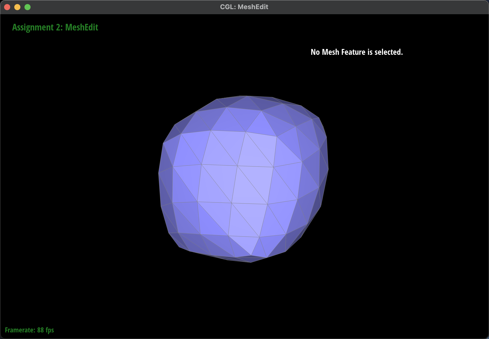
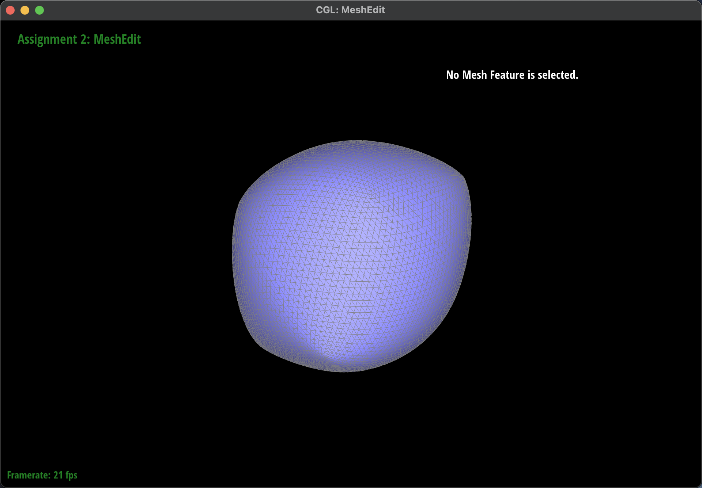
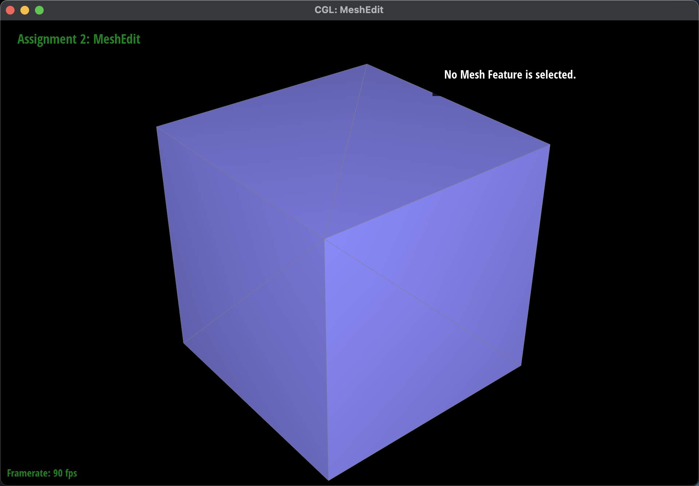
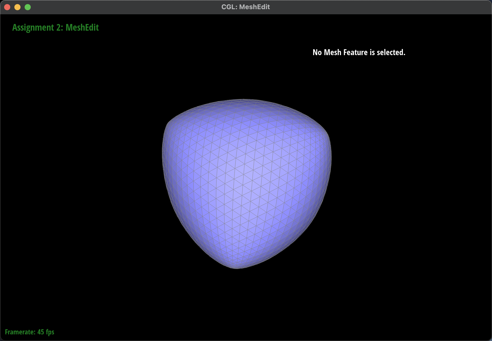

Overview
In this project we first implemented bezier curves and surfaces, one of the geometry bedrocks of computer graphics. Then we used half-edge data structure to represent mesh grid. Next is edge flip and edge split, which is the basic operation for loop subdivision. Finally we implemented loop subdivision, a technique that smoothen the mesh grid.
The writeup can be found here.
Section I: Bezier Curves and Surfaces
Part 1: Bezier curves with 1D de Casteljau subdivision
De Casteljau's algorithm is a recursive approach to use linear interpolation to evaluate points on a Bezier curve. In our implementation, we called lerp function on every neighboring pair of control points, making the total number of control points to decrease by one. With this fundamental evaluateStep function, we called it repeatedly until there is only one control point. Such a point is what we expected to be on the curve.
|

|

|
Part 2: Bezier surfaces with separable 1D de Casteljau subdivision
De Casteljau's algorithm can be extend to a 2D patch circumstance. We first used the 1D evaluateStep function to evaluate every row of the n by n control points grid with a fixed linear interpolation parameter of u. After above step, we would get a set of points which are located on the original row bezier curves respectively. We view this group of points as new control points. Finally, we perform de Casteljau's algorithm on these new control points with a linear interpolation parameter of v. In this dynamic process of altering u and v, the set of possible final point locations is the patch, or 2D Bezier surface we want.

|
Section II: Sampling
Part 3: Average normals for half-edge meshes
To calculate the area weighted normal vector at a given vertex, we have to loop through all the neighboring faces and calculate their area and normal vectors. This divide the problem into two subparts:
First, we need to loop through the faces (and their vertices). To do so, we use the twin iterator defined in every half-edge. We notice that current->twin->next is the next starting half-edge of a new face. Therefore, we can use a do-while loop to iterate through all the faces adjacent to the given vertex v.
Second, we need to calculate the area of the face triangle at a given starting half-edge. We use the half-edge that originates from the given vertex and call next three times to get three half-edges in a counter-clockwise fashion. Then, the three vertices we want is just the source points of these three half-edges. Once we have the coordinates of three source points, we calculate the cross product of the two vectors they form. The outer product's length is the area of the parallelogram, which is proportional to the area of the face triangle. Thus, we can simply accumulate these cross products and normalize them in the last step.
|

|

|
Part 4: Half-edge flip
To flip an edge of two triangles, we use local variables to store all half-edges, vertices, and faces involved in order to have a clear picture of what we are going to modify. During the process, we first delete two half-edges and one edge. After deletion, we add two new half-edges and one edge, and then totally reorgranize the pointers in these mesh elements to get the two side-by-side new triangles.
|
|

|
Funny thing during the debugging: Since we used a fully commadline-based build and debug workflow with cmake on MacOS, we chose to use "lldb" as our debug tool. The problem was we naturally thought "lldb" was just an apple version of "gdb" with exact the same command set but it turned out "lldb" use different commands in its subset. That caused a lot of trouble because we kept typing in gdb commands and getting errors.
Part 5: Half-edge split
First, we new one vertex, two triangles and three edges. We asssign the position of the new vertex to the midpoint of the original edge. We basically follow this order: 1. For each vertex, edge, and face, set its halfedge pointer; 2. For each half-edge, set its next, twin, vertex, edge, and face pointer to the correct element. After implementing this, we met a strange problem. If we split this particular edge (after splitting once), the face adjacent to one of the edges on the upper triangle we split gets deleted. And after using lldb and check_for() function, we found we fail to correctly assign the new faces to those unmodified edges. Sometimes you only notice those new edges but fail to change those quite invisible edges. It's wise to set everything from the start.

|

|
Part 6: Loop subdivision for mesh upsampling
To implement loop subdivision algorithm. The first thing is to make sure one wrote a COMPLETELY correct edge flip and edge split algorithm in part 4 and 5. This is the first lession we've learned during task 6. Once edge flip and edge split is correct, we perform the three-step implementation as described in the guideline. 1.A We loop through all the old vertices and compute their new position in their newPosition fields. 1.B We loop through all the old edges and compute their new position in their newPosition fields using 1/8, 1/8, 3/8, 3/8 weights. 2. Split all the edges in our mesh then flip only those edges connection a new vertex and an old vertex. 3. We loop through all vertices, if it is new we set its position to its edge's newPosition. If it is old we set its position to its own newPosition.
Another key point in during implementing loop subdivision is the decision on which edge to flip. We found that simply flipping edges connecting a new vertex and an old vertex would not work since there are new-old vertex edges along the old edges but we don't need to flip these ones. To handle this problem, we took advantage of the isNew field in vertex and edges. We set the splited vertex's isNew field to true and two newly created edges' isNew field to true. With that, we derived the condition "(vertexA->isNew XOR vertexB->isNew) AND edge->isNew" to be the one that helps us decide which edge to flip during the flipping stage.
|

|

|
What happens to sharp corners and edges? The sharp corners and edges are not averaged as their flat partners. Can you reduce this effect by pre-splitting some edges? We tried as below, now our subdivided cube becomes a smooth regular tetrahedron it is symmetric and beautiful.
|

|

|
Section III: Optional Extra Credit
If you are not participating in the optional mesh competition, don't worry about this section!